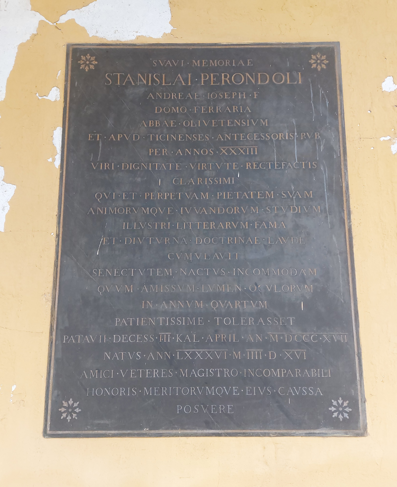

Ruolo: Abate e Teologo (1731-1817)

"Alla cara memoria di Stanislao Perondoli, figlio di Andrea Giuseppe, originario di Ferrara, abate degli Olivetani e professore pubblico presso i Pavesi per 33 anni. Uomo illustrissimo per dignità, virtù e rettitudine, il quale accrebbe la sua costante devozione e il desiderio di portare beneficio agli spiriti con l'illustre reputazione letteraria e la duratura lode della sua dottrina. All'età della gravosa vecchiaia, avendo sopportato per quattro anni con enorme pazienza la perdita della vista, morì a Padova il terzo giorno prima delle Calende di aprile dell'anno 1817. Visse 86 anni, 4 mesi e 16 giorni. Gli amici affezionati posero (questa lapide) per l'onore e i meriti del loro incomparabile maestro."
"In beloved memory of Stanislao Perondoli, son of Andrea Giuseppe, originally from Ferrara, abbot of the Olivetans and public professor of the inhabitants of Pavia for 33 years. The most illustrious man for dignity, virtue and integrity, who increased his steady devotion and desire to bring benefit to souls with his distinguished literary reputation and the enduring praise of his teaching. In the burdened years of old age, having endured for four years with great patience the loss of his sight, he died in Padua on the third day before the Kalends of April in 1817. He lived for 86 years, 4 months and 16 days, His devoted friends placed (this headstone) for the honor and merits of their incomparable teacher. "